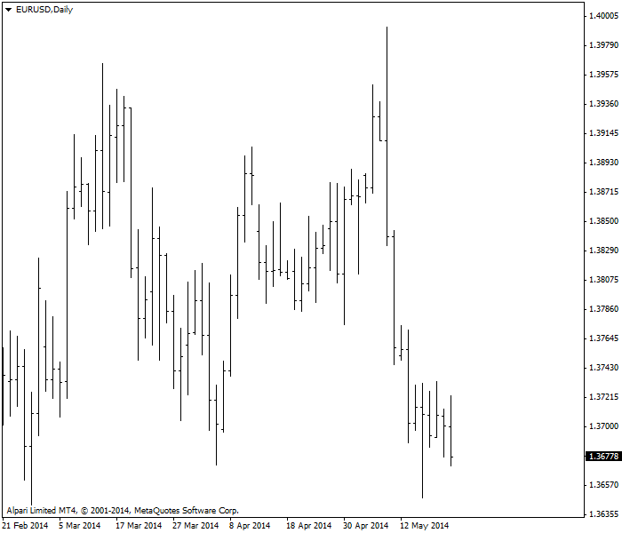
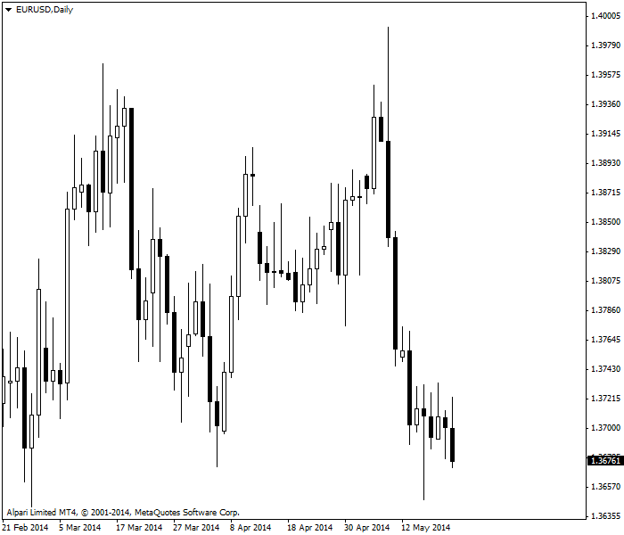

<!DOCTYPE html>
<html>
</html>
<head>
  <meta charset="utf-8">
  <meta http-equiv="X-UA-Compatible" content="IE=edge">
  <title>外汇站（fx-z.com） - 蜡烛图</title>
  <meta name="description" content="">
  <meta name="viewport" content="width=device-width, initial-scale=1">
  <meta name="robots" content="all,follow">
  <!-- Bootstrap CSS-->
  <link rel="stylesheet" href="vendor/bootstrap/css/bootstrap.min.css">
  <!-- Font Awesome CSS-->
  <link rel="stylesheet" href="vendor/font-awesome/css/font-awesome.min.css">
  <!-- Google fonts - Roboto-->
  <link rel="stylesheet" href="https://fonts.googleapis.com/css?family=Roboto:400,300,700,400italic">
  <!-- owl carousel-->
  <link rel="stylesheet" href="vendor/owl.carousel/assets/owl.carousel.css">
  <link rel="stylesheet" href="vendor/owl.carousel/assets/owl.theme.default.css">
  <!-- theme stylesheet-->
  <link rel="stylesheet" href="css/style.default.css" id="theme-stylesheet">
  <!-- Custom stylesheet - for your changes-->
  <link rel="stylesheet" href="css/custom.css">
  <!-- Favicon-->
  <link rel="shortcut icon" href="img/favicon.png">
  <!-- Tweaks for older IEs--><!--[if lt IE 9]>
    <script src="https://oss.maxcdn.com/html5shiv/3.7.3/html5shiv.min.js"></script>
    <script src="https://oss.maxcdn.com/respond/1.4.2/respond.min.js"></script><![endif]-->
</head>
<body>
  <div id="all">
    <div class="container-fluid">
      <div class="row row-offcanvas row-offcanvas-left"> 
        <!--   *** SIDEBAR ***-->
        <div id="sidebar" class="col-md-4 col-lg-3 sidebar-offcanvas">
          <div class="sidebar-content">
            <h1 class="sidebar-heading"> <a href="https://fx-z.com">fx-z.com</a></h1>
            <p class="sidebar-p">介绍外汇相关的基本知识，告诉您如何进行自己的技术面和基本面分析，讲解先进的交易理念，并且为您阐述失败交易者与专业交易者之间的真正区别。 </p>
            <p class="sidebar-p">通过这些课程的学习，您将学会如何根据自己的优势来应用情绪分析，还将了解真实世界的事件会对货币汇率产生什么影响，央行在外汇市场中所发挥的作用，以及交易者在颇受欢迎的即期外汇交易中有哪些选择方案。 </p>
            <ul class="sidebar-menu">
                <!-- Link-->
                <li class="sidebar-item"><a href="https://fx-z.com" class="sidebar-link">首页</a></li>
                <!-- Link-->
                <li class="sidebar-item"><a href="cihui.html" class="sidebar-link">外汇词汇</a></li>
                <!-- Link-->
                <li class="sidebar-item"><a href="ebook.html" class="sidebar-link">获取外汇电子书</a></li>
            </ul>
            <p class="social"><a href="https://www.forextimechina.com.cn/zh?form=IZIN" target="_blank"data-animate-hover="pulse" class="external facebook"><i class="fa fa-eur"></i></a><a href="https://www.forextimechina.com.cn/zh?form=IZIN" target="_blank" data-animate-hover="pulse" class="external gplus"><i class="fa fa-gbp"></i></a><a href="https://www.forextimechina.com.cn/zh?form=IZIN" target="_blank" data-animate-hover="pulse" class="external twitter"><i class="fa fa-rmb"></i></a><a href="https://www.forextimechina.com.cn/zh?form=IZIN" target="_blank" title="" class="external instagram"><i class="fa fa-dollar"></i></a><a href="https://www.forextimechina.com.cn/zh?form=IZIN" target="_blank" data-animate-hover="pulse" class="email"><i class="fa fa-money"></i></a></p>
            <div class="copyright text-center text-md-left">
             
              
            </div>
          </div>
        </div>
        <!--   *** SIDEBAR END ***  -->
        <!--   *** DETAIL ***-->
        <div class="col-md-8 col-lg-9 content-column white-background">
          <div class="small-navbar d-flex d-md-none">
            <button type="button" data-toggle="offcanvas" class="btn btn-outline-primary"> <i class="fa fa-align-left mr-2"></i>菜单</button>
            <h1 class="small-navbar-heading"> <a href="https://fx-z.com/4-4.html">下一篇 </a></h1>
          </div>
          <div class="row">
            <div class="col-xl-10">
              <div class="content-column-content">
                <h1>蜡烛图</h1>
       <p>
    蜡烛图由日本交易者发明于数个世纪之前，据说最初用于米市交易。自 20 世纪 90 年代被 Steve Nison 引入西方之后，蜡烛图在所有市场均引起了轰动，目前已被大多数分析师采用。蜡烛图备受欢迎的原因在于，与常规图表相比，它们能传递更多视觉信息。
</p>
<p>
    常规图表侧重最高价与最低价，而蜡烛图侧重开盘价与收盘价。蜡烛图由一个矩形（被称为“实体”）组成，矩形顶部既可以是开盘价，也可以是收盘价，而且您只需看一眼即可分辨两者，因为如果矩形顶部为收盘价，则矩形颜色为白色。由于收盘价高于开盘价，白色对买方而言意味着喜悦的一天。
</p>
<p>
    若蜡烛为黑色，说明收盘价位于矩形底部。与所有棒形图分析一样，收盘价低于开盘价意味着图表时间周期内出现了消极情绪。
</p>
<p>
    若您看到一系列白色蜡烛，说明多个收盘价一直高于开盘价，而且最高价也可能出现攀升，因此这立刻会为您带来一种轻松感，让您知道交易是安全的，同时价格走势也很稳当。相反，若您看到一系列黑色蜡烛图，说明市场弥漫着消极情绪，您应该卖空。
</p>
<p>
    请注意，有些蜡烛图用绿色、红色或其它色彩组合显示，深色版总是表示收盘价低于开盘价，而浅色版总是表示收盘价高于开盘价。
</p>
<p>
    最高价和最低价由从实体顶部及底部突出的线条表示。这些线被称为影线，不过有时也被成为烛芯（像蜡烛芯）或尾线等其他名称。
</p>
<p>
    您可以在日本蜡烛图结构课程中进一步了解蜡烛图。
</p>
<p>
    与传统棒形图相比，日本蜡烛图结构有一个巨大的优势。常规图表仅有一条竖线，而蜡烛图有一个更大的矩形实体。若收盘价高于开盘价，则实体为白色。若收盘价低于开盘价，则实体为黑色。一系列相同颜色的实体将产生直接的视觉冲击。请比较以下两个图表。哪个图表的形象更生动？
</p>
<p>
      棒形图
</p>
<p>
    同一个图表的蜡烛图版本
</p>
<p>
    除了视觉冲击力，蜡烛图还有一个很大的优势——它们能用于任何时间周期，可精确到 1 分钟。实际上，如果您是持仓 15 分钟至 4 小时的短期交易者，您可以将蜡烛图用于多个时间周期中，其中时间周期越短表示动量损失越大，例如实体变短，甚至变成十字星（开盘价与收盘价相同）。请注意，在交易时段（尤其是纽约时段）结束时，您会在交易者减仓时看到大量小实体和十字星。
</p>
<p>
    <strong>大小问题</strong>
</p>
<p>
    如所有棒形图一样，蜡烛越大，意味着时段内的交易行为越多。当蜡烛实体较小时，意味着交易活动不多；当蜡烛实体非常大，且开盘价及收盘价超过前一个蜡烛图的开盘价及收盘价时，这种形态被称为“吞噬蜡烛”。如果蜡烛实体为白色（收盘价高于开盘价），这是“多头吞噬蜡烛”，意味着其开盘价低于前一日开盘价，但收盘价高于前一日收盘价。如果蜡烛实体为黑色（收盘价低于开盘价），这是“空头吞噬蜡烛”。
</p>
<p>
    若要了解更多相关知识，您可以阅读蜡烛图形态课程。
</p>
<p>
    有一种具体的蜡烛图形态经常出现在外汇行情中，即十字星蜡烛图，它的开盘价与收盘价几乎相同，因此实体仅为一条水平线。十字星看起来像加号：+。相同的开盘价与收盘价告诉您市场缺乏方向性，但如果能在趋势快结束时看到大实体图表，那么这种效果比传统棒形图更引入注目——市场活动的低迷情况立刻显而易见。十字星可能是或不是意味着走势即将结束——您需要查看下一个图表才能确定。但十字星是一个警示。
</p>
<p>
    <strong>蜡烛图的缺点</strong>
</p>
<p>
    蜡烛图侧重开盘价与收盘价，将最高价与最低价降为次要位置。上涨趋势的传统定义是一系列最高价及最低价均逐渐攀升（假设收盘价攀升），而下跌趋势的定义是一系列最低价及最高价均逐渐走低（假设收盘价走低）。您也可以反复倒腾数据，以获得一系列逐渐攀升的最高价、最低价以及走低的收盘价，但这会出现偏差，而且这种数据不会持续太久。通常，上涨趋势的最高价逐渐攀升。因此，蜡烛图与趋势的中心定义是相悖的。
</p>
<p>
    蜡烛图不会告诉你先出现最高价还是最低价。在传统棒形图中，垂直线左侧的标记线表示开盘价，右侧的标记线表示收盘价。根据您查看的时间周期，您可能不关心最高价与最低价哪个先出现，但棒形图会提示您先出现哪一个。例如，如果开盘价接近最低价、收盘价接近最高价，您预计下一个棒形看涨。为了公平起见，对应的蜡烛图也显示相同的内容，下一个蜡烛实体为白色，但棒形图分析需要比蜡烛图所允许的程度更细致。
</p>
<p>
    此外，作为短期指标，蜡烛图仅总结一至五个时段的市场情绪。如上所述，若一系列长时间无方向的棒形之后出现十字星，这代表着警示信号，但需等到下一时段数据出来之后才能得出结论。蜡烛图分析总是一个尚未完成的过程。
</p>
<p>
    另一个问题在于，蜡烛图形态的种类非常多。您能够轻松学习前五种，但试图应用更多就会变得枯燥乏味。
</p>
<p>
    可能，蜡烛图在股票中的使用过于泛滥。如所有指标一样，它们只有指示作用，没有控制作用。您见到的蜡烛图形态可能会指向某个具体的交易决定——例如，上文中提到，一系列长时间的白色或黑色蜡烛后出现十字星——但之后又重回趋势。通常会在外汇中失败的形态是“三根白蜡烛”和“三根黑蜡烛”。在标准蜡烛图分析中，这些形态意味着已经达到动量，而且下一根蜡烛将延续相同的方向。但在外汇行情中，连续出现四根蜡烛的情况非常罕见。也许会出现第五根，但不是第四根。应用蜡烛图分析之前，您应该事先掌握一些关于趋势和趋势稳定性的知识。除非您已经知道趋势和趋势维度，否则您无法分析趋势的变化。
</p>
<p>
    <strong>与其它指标兼容</strong>
</p>
<p>
    蜡烛图能够与所有合理指标完美结合，因为这些指标往往像蜡烛图一样使用收盘价。可搭配所有指标——MACD、RSI、随机指标、支撑和阻力位等。
</p>
<p>
    <br/>
</p>
<p>
    <br/>
</p>
              </div>
            </div>
          </div>
        </div>
      </div>
    </div>
  </div>
  <!-- JavaScript files-->
  <script src="vendor/jquery/jquery.min.js"></script>
  <script src="vendor/popper.js/umd/popper.min.js"> </script>
  <script src="vendor/bootstrap/js/bootstrap.min.js"></script>
  <script src="vendor/jquery.cookie/jquery.cookie.js"> </script>
  <script src="vendor/owl.carousel/owl.carousel.min.js"></script>
  <script src="vendor/masonry-layout/masonry.pkgd.min.js"></script>
  <script src="js/front.js"></script>
</body>